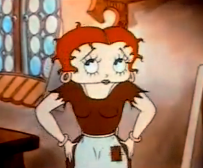

The lithographed films for home use that were available in Europe in the first decades of the twentieth century were multi-coloured, but the technique does not seem to have been applied for theatrically released animated films. While the original prints of The Adventures of Prince Achmed featured film tinting, most theatrically released animated films before 1930 were plain black and white. Effective color processes were a welcome innovation in Hollywood and seemed especially suitable for cartoons.
A cartoon segment in the feature film King of Jazz (April 1930), made by Walter Lantz and Bill Nolan, was the first animation presented in two-strip Technicolor. Fiddlesticks, released together with King of Jazz, was the first Flip the Frog film and the first project Ub Iwerks worked on after he had left Disney to set up his own studio. In England, the cartoon was released in Harris Color, a two-color process, probably as the first theatrically released standalone animated cartoon to boast both sound and color.

To create an impression of depth, several techniques were developed. The most common technique was to have characters move between several background and/or foreground layers that could be moved independently, corresponding to the laws of perspective (e.g. the further away from the camera, the slower the speed).
The Fleischers developed the very different "Stereoptical process" in 1933 for their Color Classics. It was used in the first episode Betty Boop in Poor Cinderella (1934) and most of the following episodes. The process involved three-dimensional sets built and sculpted on a large turntable. The cels were placed within the movable set, so that the animated characters would appear to move in front and behind of the 3D elements within the scene when the turntable was made to rotate.
At least eight animated feature films were released before Disney's Snow White and the Seven Dwarfs, while at least another two earlier animated feature projects remained unfinished. Most of these films (of which only four survive) were made using cutout, silhouette or stop-motion techniques. Among the lost animated features were three features by Quirino Cristiani, who had premiered his third feature Peludópolis on 18 September 1931 in Buenos Aires with a Vitaphone sound-on-disc synchronized soundtrack.